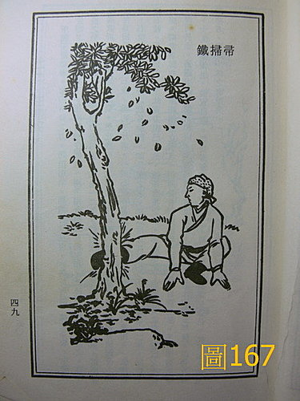

武術 46：少林功法部分資料
這些資料是用來說明 藥王脈學第 82 條 脈合按摩導引的資料
〈圖164～168〉《軟硬功練習法‧靈空禪師著‧華聯出版社》。少林功法先求內壯，易筋洗髓先練，後則及外而練筋皮骨。凡外在操練皮肉瘀腫損傷，必服傷藥和藥洗摩擦浸洗方無後顧之憂，不然瘀血長久內溯五臟，日久必成虛怯勞病，非今日坊間所謂拍打可治百病，所以天天打少海、曲澤等處成瘀所謂排毒養生，不知拍打手法有輕重之分，輕揉為補，重打為瀉，而脈證改變之後，拍打的穴位手法就要跟著變換，並不能執一法而為，譬如心脈有火，拍手臂內側少海、曲澤等處出痧則可瀉心火，但心火一瀉，症狀隨之改善之後，查脈證若心火已退，再天天復打已無瘀滯反成天天瀉心氣，故初拍打經絡流通感覺暢快，而久拍打反而心氣傷兼瘀血反攻心，打之數月必有氣喘、短氣、心悸的毛病出來。
